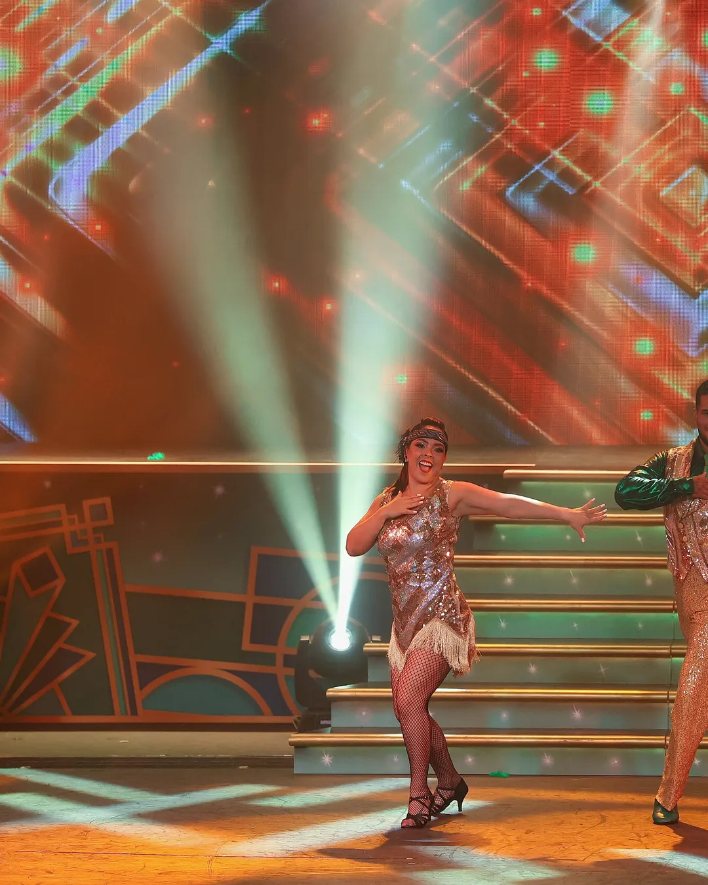
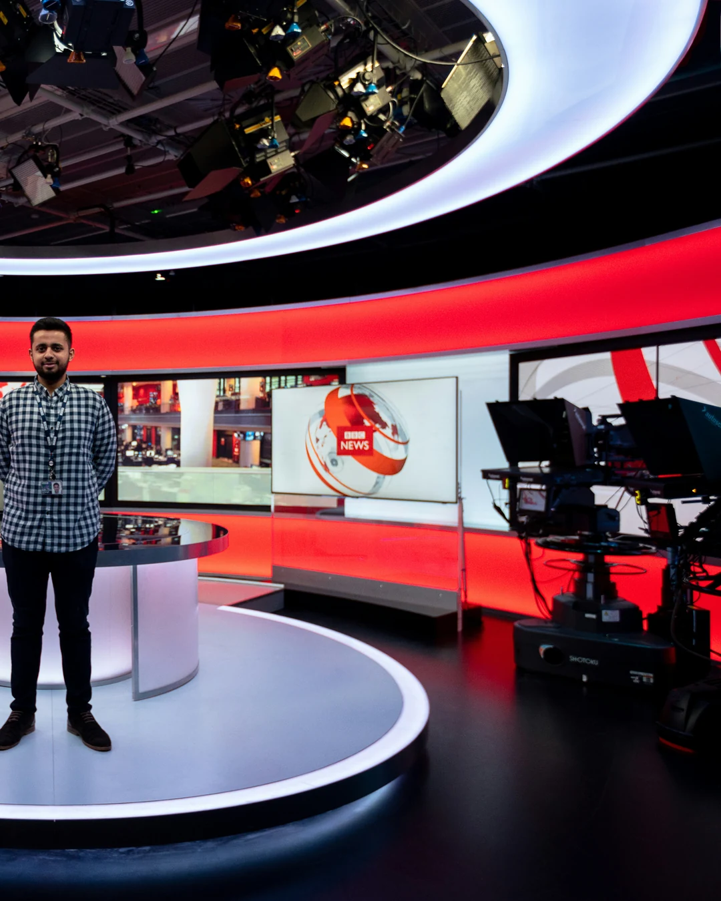
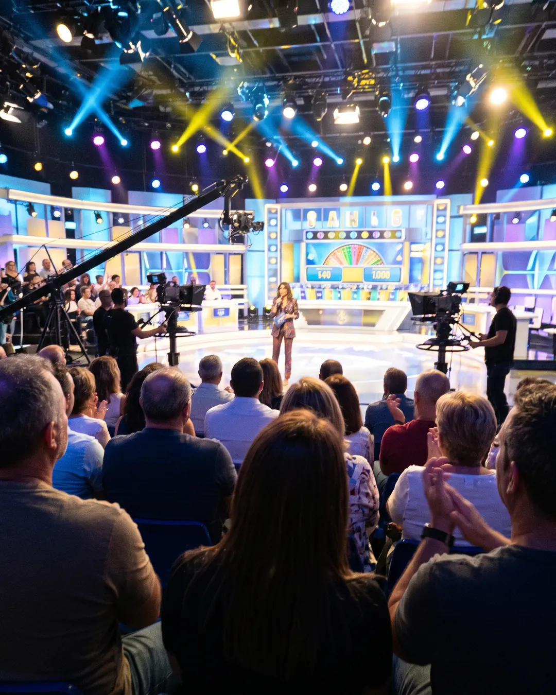

Caso n.º 11 · Concursos
Imágenes
-

REAL
Fotografía real
-
REAL
Fotografía real
-

REAL
Fotografía real
-

IA
La confesión del sospechoso
Plató de un concurso visto desde las gradas del público durante una grabación, con cabezas de espectadores en primer plano, focos de colores al fondo y la presentadora a lo lejos; algo movida.
-
REAL
Fotografía real
¿Dato o Bulo?
-
DATO «Existe un programa en Japón en el que los premios son kilos de atún rojo.»
En la televisión japonesa es muy habitual premiar a los ganadores con alimentos de lujo en lugar de dinero.
- Premios típicos: atún rojo (maguro), ternera wagyu y frutas exclusivas.
-
BULO «Una cadena estadounidense grabó la final de un concurso en el espacio, en gravedad cero.»
Hasta la fecha, ningún concurso ni reality show ha grabado su final en el espacio exterior.
- Space Hero prometía enviar al ganador a la Estación Espacial Internacional.
- Los costes, la logística y los riesgos de seguridad lo han impedido.
-
BULO «En un concurso en directo de 2012, el campeón defensor sufrió una afasia por estrés y olvidó cómo leer y escribir.»
No hay registro de que un campeón sufriera una afasia por estrés en directo en un programa de televisión en 2012.
- Perder de golpe la capacidad de leer y escribir por estrés es un mito.
- Los nervios y los bloqueos mentales sí son comunes en televisión.
-
DATO «El récord de ganancias acumuladas en un solo concurso es de más de 4.700.000 dólares.»
Brad Rutter acumuló unos 4,8 millones de dólares en distintos torneos de Jeopardy!.
- En España, «Los Lobos» ganó más de 6,6 millones de euros en ¡Boom! (2019).
-
DATO «El bote más alto jamás ofrecido es de 10 millones de dólares.»
El mayor premio individual ofrecido en un concurso es el de Beast Games: 10 millones de dólares en metálico.
- Es un reality creado por el youtuber MrBeast para Amazon.